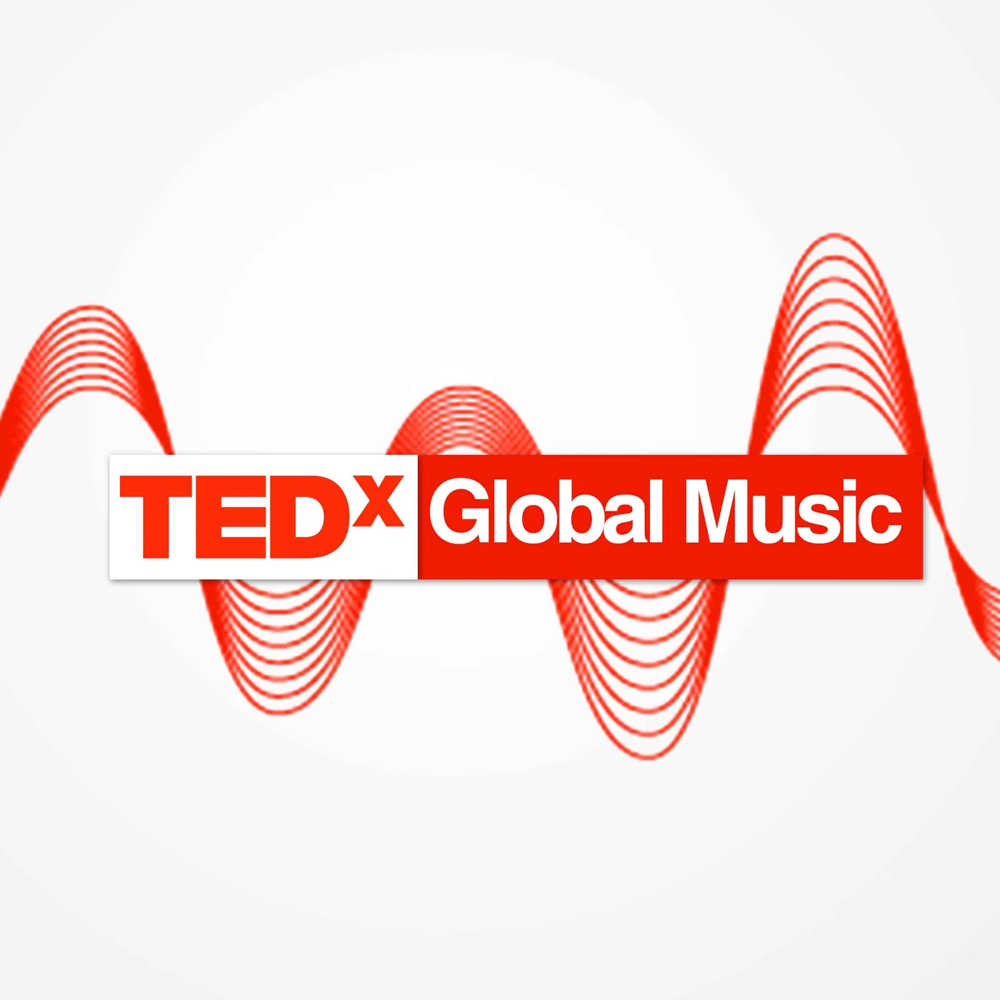

Blog · June 24, 2012
TEDx Music Project on Soundcloud
Few things make me excited to be working after 10 pm on Saturday. The TEDx Music Project is one of them. I’m thrilled to share the next phase and give a quick update on our progress since TEDxSummit.


The first phase includes 17 tracks. Follow us to be among the first with access to the latest music from TEDx.
Our team is hard at work building the next generation of TEDxMusicProject.com. It will go live in a few short weeks and feature TED API integration. The new site will showcase both video and audio versions of the best live TEDx performances.
Listen to the tracks, download them and share with friends. Which track(s) do you like most?
Finally, a massive thank you to everyone who has helped make this happen and supported the TEDx Global Music Project along the way. Major props to Souncloud for featuring us alongside audio sources such as The Economist and David Guetta. We managed to gather well over 1,000 followers..in our first 24 hours public (June 22). It’s only going to get bigger.
First published on my old blog, amyrobinson.wordpress.com, June 24, 2012.